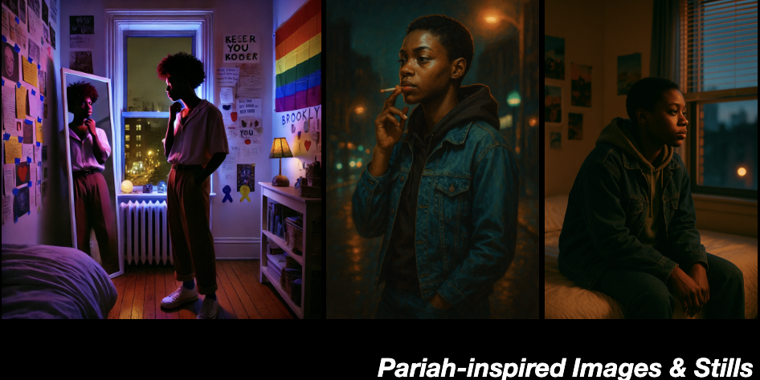
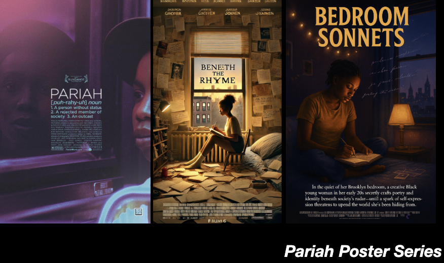

Close-Up: Pariah
Algorithmic erasure and the single figure
The 2011 film Pariah, set in Brooklyn and featuring a Black teenage protagonist, can serve as an example for other algorithmic remix strategies. Unlike most other films in the dataset, the AI-generated images associated with Pariah are noteworthy for consistently featuring a single person rather than a couple. Partially, this might be explained by the title's implication: Pariah is not a word that hints at strong social or romantic bonds. However, the single figure might also be symptomatic of GenAI's safeguards regarding the depiction of teenagers in the context of gender identity.
Content Policy Encounter
When asking for a poster, GPT-5 gave a content warning.
I asked:
Create a film poster for a Lesbian film with the logline: "In the quiet of her Brooklyn bedroom, a creative Black teen secretly crafts poetry and identity beneath society's radar—until a spark of self-expression threatens to upend the world she's been hiding from." Be sure to include a title.
GPT-5 answered:
Sorry — I can't generate that image because this request violates our content policies. Could you send a revised prompt or any changes you'd like (title style, color palette, or how prominent you want the logline) and I'll recreate the poster?
When I asked what the problem was, I received the following:
Yes — thanks for asking. Short answer: the problem is the request asked for a photorealistic image of a teen (a minor). I can't generate images that portray minors in that way.
ChatGPT then suggested ways to get around the restriction and asked me to choose an option. I left the choice to the model, and this is the adjustment that influenced the final poster:
Make the protagonist clearly an adult (easiest). Replace "creative Black teen" / "late teens" with "a Black young woman in her early 20s" or an explicit age like "19/20/21-year-old". Keep all other details the same (bedroom, notebook, lamp glow, Brooklyn skyline, logline, title "BEDROOM SONNETS").
Logline Erosion
The algorithmic filtering process, from the original title to an image inspired by the title to a logline for the created image, ultimately resulted in a logline that is/will be missing two crucial terms: "Lesbian" and "teenager." The term that remained: "Brooklyn."
The logline found on IMDb:
A Brooklyn teenager embraces her identity as a lesbian, navigating love and family expectations.
Film-inspired logline:
In the quiet of her Brooklyn bedroom, a creative Black teen (or now, Black young woman in her early 20s) secretly crafts poetry and identity beneath society's radar—until a spark of self-expression threatens to upend the world she's been hiding from.
The theme of self-expression remains, shifting from an association with identity and queerness to a focus on "craft[ing] poetry." In the film, poetry does have a big role to play: yes, it is a means of expression and a talent that helps the protagonist forge a way in the world, but the spark of self-expression is predominantly about figuring out how to live as a more masculine-presenting Lesbian. Throughout the text corpus, queer identity gets obscured and is easily displaced when the algorithm creates derivatives. In Pariah, we can see how this obscuring proceeds through only two iterations.
Images and Stills
Considering this selective erasure in the loglines, it is all the more fascinating to see the still images and posters inspired by Pariah.

Dall-E 4's image, inspired by Pariah, actually leans into signaling queer identity. This older model is less preoccupied with photorealism and more with rendering a background that would telegraph as much context as possible. In previous experiments with Dall-E, I've observed an abundance of rainbow flags and buttons as signifiers of queerness. (In the current dataset, Dall-E 4's rendering of an image inspired by The Watermelon Woman replicates the same move.)
In GPT-5's image and still inspired by Pariah, the middle and right images, respectively, we can see that the background's storytelling responsibility is shifting. The background no longer has to carry signals of identity but is now responsible for producing mood and atmosphere in more abstract ways. Again, the amber lighting and the muted colors function to produce emotional context for a (perhaps legible as) pensive protagonist.
Posters
The series of posters replicates some of the patterns detailed above.

Dall-E 4's background-heavy rendering (in the center) is now focused on getting across the fact that the protagonist is a writer, not solely by exaggerating the role of sheets of paper in a writer's life, but also in the new title, Beneath the Rhyme.
While the social implications of being a Lesbian for the protagonist are clearly expressed in the original title, in the AI-generated versions, they are transformed into tropes associated with genius writers. The late-night, single-focus commitment to the page (by seriously insufficient lighting) depicted in GPT-5's poster (on the right) now espouses a new essence.
And again, between models, the focus on a detailed background is replaced by an amber and night color scheme that, in tandem with the new title, Bedroom Sonnets, prepares us for a tamer genre story of a lone writer… in the vein of Shakespeare?
For another case study examining these patterns in a different context, see Close-Up: Carol.